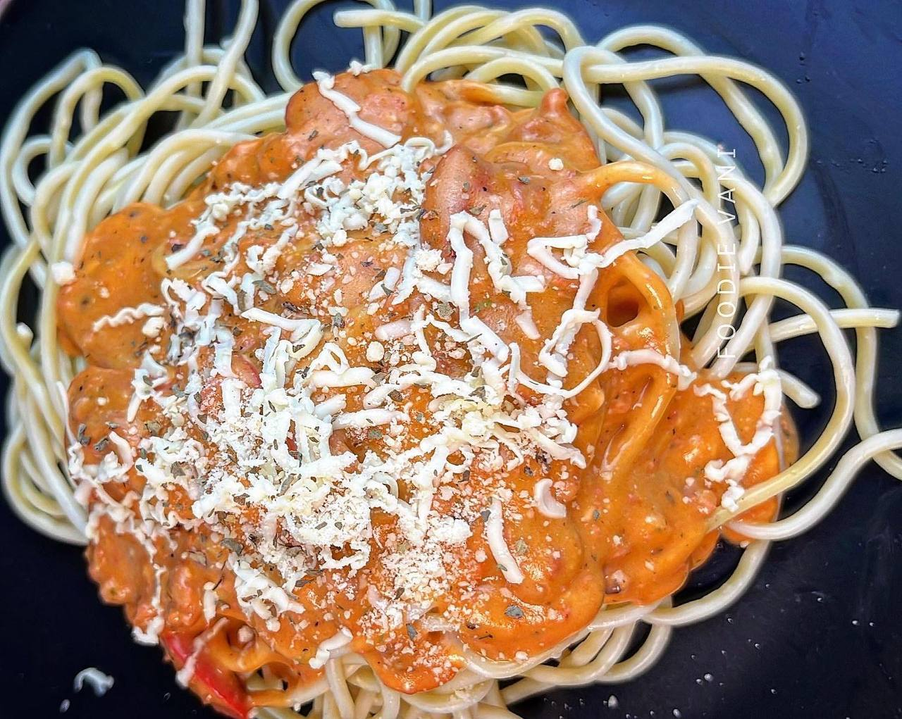
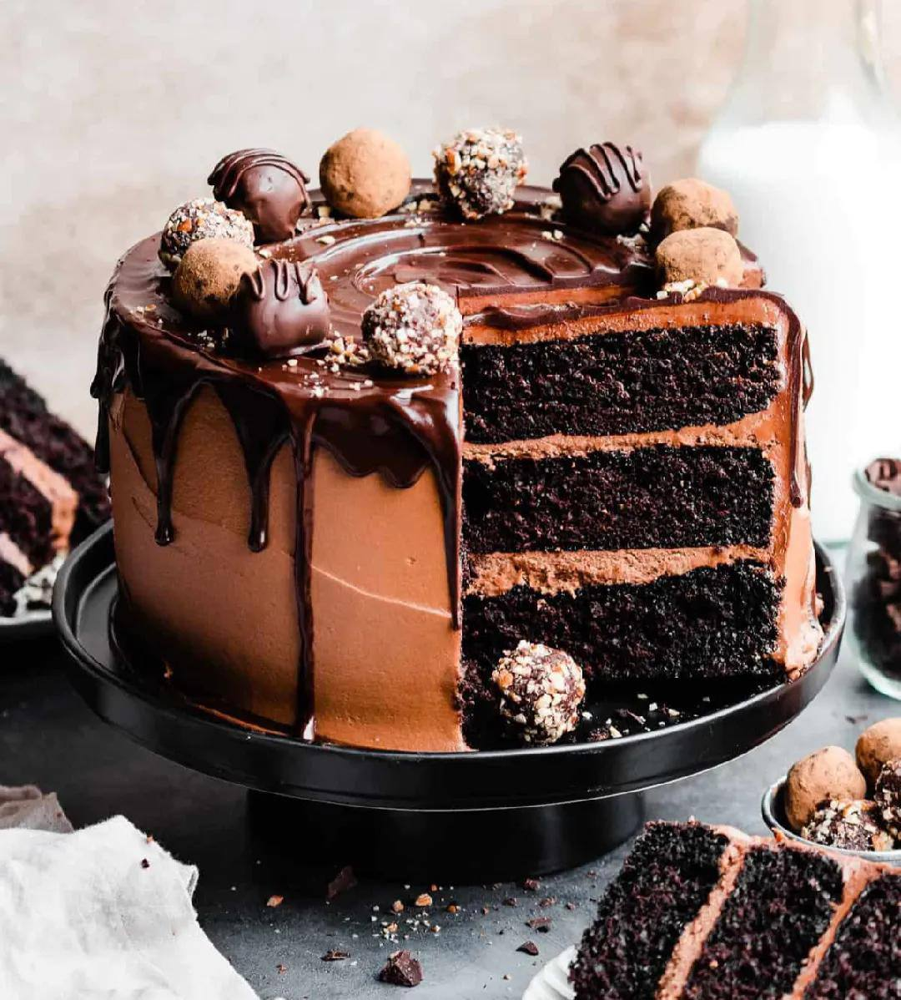
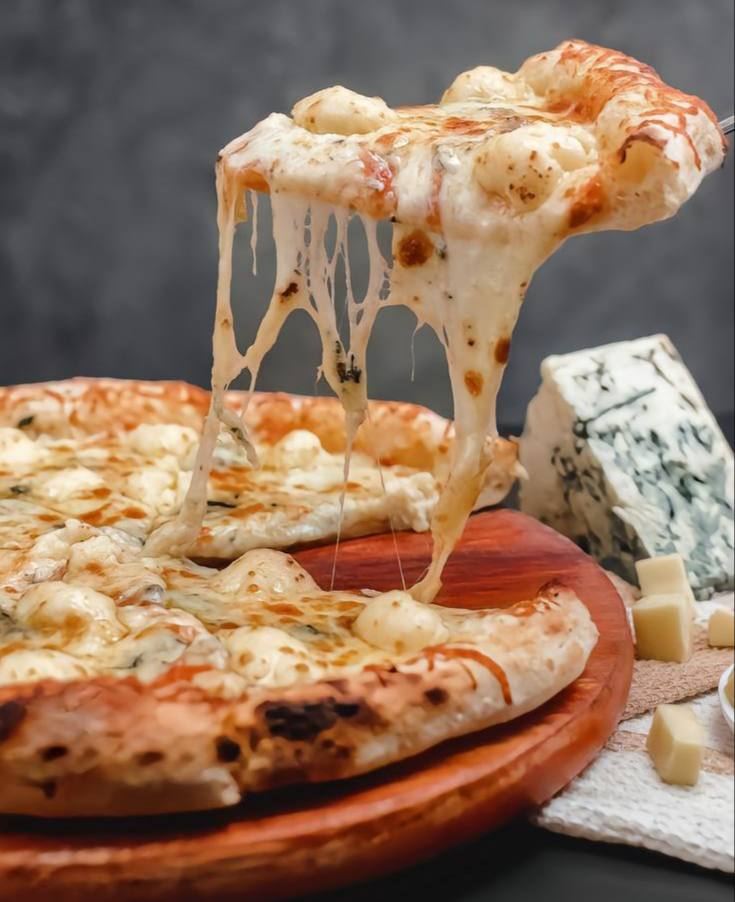
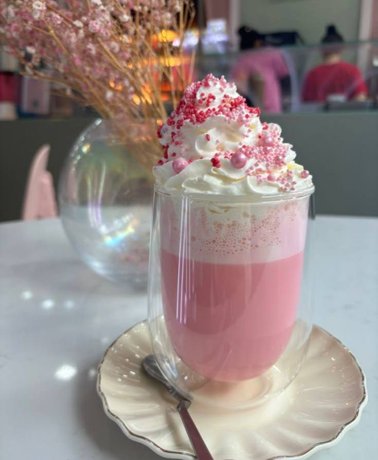

|  | Spaghetti BologneseThis is a classic Italian dish that combines rich meat sauce with perfectly cooked pasta. It's a comfort food for any occasion! |
- Boil water in a large pot and cook the spaghetti until al dente.
- Heat oil in a pan and sauté chopped onions and garlic.
- Add ground beef and cook until browned.
- Pour in tomato sauce and add salt, pepper, and Italian herbs.
- Let the sauce simmer for 15–20 minutes.
- Drain the spaghetti and mix with the sauce, or serve the sauce on top.
- Garnish with grated Parmesan cheese and fresh basil if desired.
|  | chocolate CackeChocolate cake is a rich, moist dessert loved for its deep cocoa flavor and soft texture. It's perfect for celebrations or simply satisfying a sweet craving. |
- Preheat the oven to 350°F (175°C).
- In a bowl, mix flour, cocoa powder, baking powder, and a pinch of salt.
- In another bowl, beat eggs with sugar until fluffy, then add milk and oil.
- Combine the wet and dry ingredients until smooth.
- Pour the batter into a greased cake pan.
- Bake for 30–35 minutes or until a toothpick comes out clean.
- Let it cool, then frost with chocolate icing if desired.
|  | Margherita pizzaMargherita pizza is a classic Italian dish made with fresh tomatoes, mozzarella cheese, and basil leaves. It's simple, delicious, and full of flavor. |
- Preheat the oven to 475°F (245°C).
- Roll out the pizza dough on a floured surface.
- Spread a thin layer of tomato sauce over the dough.
- Add slices of fresh mozzarella cheese evenly.
- Top with fresh basil leaves and a drizzle of olive oil.
- Bake for 10–12 minutes until the crust is golden and the cheese is melted.
- Remove from the oven, slice, and serve hot.
|  | Strawberry SmoothieThis smoothie is a refreshing and healthy drink made with ripe bananas, sweet strawberries, and milk. It’s perfect for breakfast or a light snack. |
- Peel and slice one ripe banana.
- Wash and hull 5–6 fresh strawberries.
- Add the banana and strawberries to a blender.
- Pour in 1 cup of milk (or a plant-based alternative).
- Add 1–2 teaspoons of honey or sugar if desired.
- Blend until smooth and creamy.
- Pour into a glass and enjoy chilled.